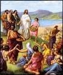
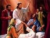
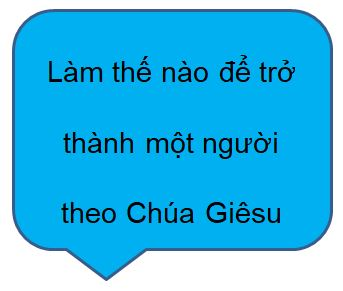

Ban đầ đã có Ngôi Lời

Một Lối vào Vĩ đại?
Mỗi tháng 12, nhiều người bắt đầu chuẩn bị cho lễ lớn nhất trong năm: Giáng sinh! Tất cả các cửa hàng đều rực sáng với đèn và kim tuyến (có vẻ mồi năm lại một sớm hơn), họ giăngi đèn xung quanh nhà của họ và trang trí cây, và thậm chí cả các đường phố của nhiều thị trấn tỏa sáng với ánh đèn lấp lánh xung quanh nhiều tòa nhà. Và sự phấn khích lớn nhất của tất cả? Món quà! Họ nóng lòng chờ đến ngày 25 tháng 12!

Một Lối Vào Rất Yên Tĩnh
Vậy, đó có phải là điều đã xảy ra 2000 năm trước? Mọi người có ngóng đợi điều đó không: họ có trang trí ngôi nhà của họ để chào đón sự ra đời của Chúa Giêsu không? Họ có mua quà cho nhau để chào đón sự ra đời được mong đợi từ lâu này không? Khi Ngài được sinh ra, có thông báo trên toàn thế giới rằng Đấng Cứu Thế cuối cùng đã xuất hiện không?
Không Hẳn.

Khi Chúa Giêsu được sinh ra tại Bethlehem, cũng được gọi là Thành phố David (nhớ không?), chỉ có một số ít người đã thực sự biết điều đó. Đó là Đức Mary, Mẹ của Chúa Giêsu, và Thánh Joseph, chồng chưa cưới của Đức Mary. Những người sở hữu đang ngựa ở nhà trọ nơi Đức Mary và thánh Joseph đã ở có lẽ biết rằng người phụ nữ đã sinh con, nhưng điều đó không có ý nghĩa đặc biệt với họ.
Nhưng có niềm vui lớn lao ở thiên đường, chúng ta biết, vì Lu-ca (Luke) 2:8-14 cho chúng ta biết rằng rất nhiều thiên thần đã xuất hiện với một số linh mục trong đêm Chúa Giêsu chào đời. Họ không chỉ thông báo rằng một bé trai tên là Giêsu đã được sinh ra, mà họ còn thực sự tuyên bố rằng Ngài là Đấng Cứu Thế (Messiah) mà người Do Thái đã chờ đợi bấy lâu!
Nhưng phải ba mươi năm sau thì bất cứ ai khác mới bắt đầu biết đến điều đó.
Bốn Người Đàn Ông, Bốn Câu Chuyện

Trong những năm sau khi Chúa Giêsu qua đời, sống lại và lên thiên đường, bốn người đàn ông khác nhau đã được truyền cảm hứng để viết về cuộc đời của Chúa Giêsu. Bốn cuốn sách đầu tiên của Tân Ước được đặt tên theo những người đàn ông đã viết những cuốn tiểu sử này (thường được gọi là Sách Phúc Âm): Matthew, Mark, Luke và John.
Họ đã không hề thảo luận với nhau; có khả năng là họ không hề biết rằng có ai khác đang viết câu chuyện của Chúa Giêsu. Matthew, Luke và John có thể đã được biết đến và thậm chí đọc Sách Phúc Âm của Mark; các học giả tin rằng đó là cuốn tiểu sử đầu tiên được viết về Chúa Giêsu. Nhưng bốn quyển Sách Phúc Âm được viết độc lập với nhau.
Khi mọi người kể một câu chuyện về một sự kiện, họ thường sẽ cố gắng nêu, theo ý kiến của họ, những điều quan trọng nhất. Đây chính là trường hợp với Matthew, Mark, Luke và John. Một số người nêu các sự kiện và những câu chuyện mà người khác không nêu; một số người kết các sự kiện theo một thứ tự hơi khác.

Ví dụ, chỉ Matthew và Luke kể lại câu chuyện của Chúa Giêsu giáng sinh. Có lẽ, trong tâm trí của Luke, điều quan trọng là để mọi người biết rằng Chúa Giêsu đã được một cô gái đồng trinh sinh ra. Vị hôn phu của Đức Mary, Giuse (Joseph), không phải là cha của Chúa Giêsu; Chúa Giêsu là Con Thiên Chúa. (Luke 1:26-38)
Sách Phúc Âm của Matthew bắt đầu với gia phả của Chúa Giêsu. Bạn có nhớ, trong khoảng thời gian dài trước đây, Thiên Chúa đã hứa với Abraham rằng thế giới sẽ được ban phước qua một vị vua sẽ đến từ các hậu duệ của ông (Sáng Thế Ký 12:3) không? Matthew cẩn thận chỉ ra rằng Chúa Giêsu là một hậu duệ trực tiếp của Vua David, một người hậu duệ trực tiếp của Abraham. Chúa Giêsu chính là việc thực hiện rằng lời tiên tri cổ xưa đó.
Trong trường hợp của Mark và John, họ dường như coi điều đó là đương nhiên, khi họ viết về Chúa Giêsu, tất cả mọi người sẽ biết họ đang nói về ai: ở thời của Ngài, Chúa Giêsu đã rất, rất nổi tiếng. Vì vậy, Mark và John bắt đầu câu chuyện của họ về Chúa Giêsu tại điểm khi Ngài bắt đầu sứ mệnh trần thế của Ngài, đó là, khi Chúa Giêsu khoảng ba mươi tuổi.
Một Messiah Họ Đã Không Mong Đợi

Khi chúng ta biết về các nhà tiên tri dự đoán rằng Israel sẽ bị Assyria và Babylon chinh phục, chúng ta cũng biết rằng cũng chính những nhà tiên tri đó đã dự đoán rằng một Vị Vua, một Đấng Cứu Thế, sẽ xuất hiện từ dòng dõi của Vua David. Những lời tiên tri này đã cho những người Do Thái hy vọng rằng Israel sẽ một lần nữa trở thành một quốc gia vĩ đại, một vị vua sẽ đến để chinh phục tất cả các kẻ thù của Israel và biến họ thành một siêu cường quốc sẽ cai trị thế giới.
Nhưng người Do Thái đã không đọc TẤT CẢ các lời tiên tri đó; hoặc, nếu họ đọc, thì họ đã hiểu lầm rất nhiều một số lời tiên tri đó. Các tiên tri đã đưa hai mô tả về Đấng Cứu Thế (Messiah) mà Thiên Chúa sẽ gửi xuống. Một là, thực sự, là một Người trị vì quyền uy. Những người Do Thái đã không hiểu được rằng Vị Vua này sẽ đến từ một nơi không không được biết đến và sẽ không có sự phô trương lớn với Ngài (bạn có nhớ đêm yên tĩnh ở Bethlehem tối và nhỏ không?). Vị Vua mới này sẽ là một người biết đến nỗi buồn, sự đau khổ và đau đớn, chứ không phải vinh quang và quyền lực vương giả.
Là một dân tộc bị đánh bại, mất tinh thần, người Do Thái đã không tìm kiếm một Đấng Cứu Thế khiêm tốn như Chúa Giêsu; mà họ đang tìm kiếm một người nào đó ấn tượng hơn thế.
Và do đó, khi Chúa Giêsu đến và sống gần họ, họ không nhận ra Đấng Cứu Thế khi họ nhìn thấy Ngài.

Lời Dạy Của Chúa Giêsu
Hãy nhớ rằng Chúa Giêsu lớn lên ở một nơi dưới sự cai trị của một quốc gia khác: lúc đó là Đế chế La Mã hùng mạnh. Chúa Giêsu lớn lên trong một xã hội rất đơn giản; những người Do Thái đã rất sùng tôn giáo, và hàng xóm của Ngài là nông dân hoặc ngư dân hoặc dân buôn bán (Joseph, chồng của mẹ Ngài, là thợ mộc lành nghề).
Có lẽ vì điều này, Chúa Giêsu đã dạy chân lý thiêng liêng bằng cách kể những câu chuyện, gọi là dụ ngôn, mà thường liên quan đến những điều mà mọi người trong xã hội của ông quen thuộc và hiểu.

- một nông dân gieo hạt trên cánh đồng (Matthew 13:2-23)
- một người con trai nổi loạn với bố mẹ, nhưng lại quay về và hối hận lớn vì những tội lỗi của (Luke 15:11-32)
- một người chăn cừu mất một trong những con cừu của (Matthew 18:10-14)
Người Pharisi (Pharisees)
Trong ngày của Chúa Giêsu, các linh mục (Kinh Thánh cũng gọi họ là người Pharisi—một từ có nghĩa là "những người riêng biệt") cai trị đời sống hàng ngày của người Do Thái. Các linh mục đến từ một trong mười hai chi tộc Israel mà Thiên Chúa đã chọn đặc biệt cho vai trò đó: người Lê-vi (Levites) (từ chi tộc Levi). Họ coi đó là công việc của họ để giữ cho người dân Do Thái khỏi đi lạc như trong quá khứ. Đó là công việc của họ, họ nghĩ vậy, là đọc và giải thích Kinh Thánh cho mọi người. (Bạn có nhớ những gì chúng tôi đã nói phía trước về việc Thiên Chúa có ý định dành Kinh Thánh cho mọi người không?)
Chúa Giêsu không xuất thân từ chi tộc Levi, vì vậy Chúa Giêsu không phải là một linh linh mục. Để trở thành một giáo sĩ Do Thái, hoặc người truyền dạy chân lý và kiến thức Kinh Thánh, một người phải trải qua một thời gian dài đào tạo tại một trường giáo sĩ Do Thái đặc biệt.

Chúa Giêsu đã không đi học giáo sĩ Do Thái, vì vậy những người Pharisi (Pharisees) đã không coi Ngài "đủ điều kiện" là một người truyền dạy.
Vì vậy, gần như từ đầu sứ mệnh của Ngài, Chúa Giêsu đã khác với những người cai trị tôn giáo. Đám đông tụ tập để nghe Chúa Giêsu dạy. Trong một trong những bài giáo lý của Ngài, được gọi là Bài Giảng Trên Núi (có thể được tìm thấy trong cả Matthew 5 và Luke 6), hầu như mọi điểm của Ngài đã đi ngược lại với những gì người Pharisêu (Pharisees) bảo mọi người tin theo.
Một số ý tưởng chính mà Chúa Giêsu muốn các môn đệ hiểu là:
- Thiên Chúa yêu thương con người và muốn họ cũng yêu thương Ngài. Một cách để thể hiện tình yêu của chúng ta đối với Thiên Chúa là vâng lời không chỉ là câu chữ của luật pháp, mà còn cả tinh thần. Vì vậy, cũng như sự trung thực, Chúa Giêsu yêu cầu các môn đồ phải từ bi, tử tế và công bằng.
- Chúa Giêsu muốn môn đồ của Ngài được biết đến bởi tình thương của họ: tình thương dành cho các tín hữu của họ, tình thương ngay cả đối với kẻ thù của họ. Thiên Chúa đã tha tội lỗi của chúng ta; Ngài muốn chúng ta tha thứ cho nhau.
Điều quan trọng nhất Chúa Giêsu muốn các môn đồ biết là Ngài, Chúa Giêsu, là Con của Thiên Chúa, và sự cứu rỗi khỏi tội lỗi chỉ có được thông qua Ngài. Một trong những câu nổi tiếng nhất trong Kinh Thánh tuyên bố Giao ước mới của Thiên Chúa với con người, John 3:16:
Vì Đức Chúa Trời yêu thương nhân loại, đến nỗi đã ban Con Một của Ngài, để ai tin nơi Ngài sẽ không bị hư mất nhưng được sự sống vĩnh phúc.
Tuyên bố này từ Chúa Giêsu vô cùng quan trọng vì hai lý do: thứ nhất, ý tưởng rằng Chúa Giêsu là Con của Thiên Chúa không chấp nhận đối với nhiều người Do Thái. Làm thế nào một người đàn ông có thể là Thiên Chúa? Ý tưởng thứ hai về việc các nhà lãnh đạo tôn giáo thời Chúa Giêsu không thể chấp nhận được rằng sự cứu rỗi đã không còn dành riêng cho người Do Thái. Chúa Giêsu nói rằng BẤT CỨ AI tin vào Ngài có thể thuộc về Vương Quốc Thiên Chúa (God's Kingdom) (John 1:12).
Các Sadducees
Các Sadducees, một nhóm thường giàu có nổi bật trong số những người Do Thái sống trong thời Chúa Giêsu, đã có một loại sắp xếp chính trị với những người La Mã, vì vậy mà họ đã có được một số quyền lực chính trị. Các Sadducees đôi làm nhiệm vụ thu thuế La Mã từ người Do Thái đồng hương của họ, và thường là không trung thực về nó, đòi hỏi mọi người phải trả nhiều hơn số tiền nợ để họ có thể giữ lại một phần cho mình. Các Sadducees được coi là kẻ phản bội bởi nhiều người Do Thái vì có quan hệ chặt chẽ với những người La Mã bị căm ghét.
Thường có là nói về cuộc nổi loạn giữa người Do Thái; họ bất mãn dưới sự khắc nghiệt của sự cài trị của La Mã. Các Sadducees coi đó công việc của họ để giữ hòa bình giữa người Do Thái và người La Mã. Những người Do Thái gây càng ít rắc rối cho những người La Mã, các Sadducees nghĩ vậy, thì càng dễ dàng hơn cho tất cả mọi người.
Vấn Đề Với Chúa Giêsu
Như chúng ta đã thấy ở trước, Chúa Giêsu đã đi truyền dạy cho đám đông dân chúng và truyền bá tin mừng cho tất cả mọi người về Thiên Chúa và tình thương của Ngài. Người Pharisi không hề thích điều này; họ muốn có thẩm quyền tôn giáo duy nhất trong số những người Do Thái. Chúa Giêsu đã dạy mọi người suy nghĩ sâu sắc hơn về vấn đề tâm linh so với các linh mục đã từng làm, và họ yêu mến Ngài vì điều đó.

Các Sadducees cũng không thích những đám đông mà Chúa Giêsu đã thu hút được. Một nhóm người không thể bị kiểm soát dễ dàng. Nếu Chúa Giêsu muốn đám đông xung quanh Ngài theo Ngài trong một cuộc nổi loạn chống lại Rome, thì họ có thể làm gì để ngăn chặn điều đó?
Các Sadducees biết rằng ngay cả một đám đông lớn người Do Thái cũng không sánh được sức mạnh của quân đội La Mã. Nếu người La Mã phải dẹp tan được một cuộc nổi dậy của người Do Thái, họ sẽ đè bẹp hoàn toàn (và khoảng 35 năm sau khi sựa qua đời của Chúa Giêsu, đó là chính xác những gì họ đã làm). Quyền lực chính trị của họ sẽ không còn ý nghĩa với những người La Mã nữa, và các Sadducees không để mất quyền lực của họ vào tay một người không ai biết đến như Chúa Giêsu!
Nhưng điều tồi tệ nhất mà Chúa Giêsu đã làm là loan báo cho mọi người biết rằng Ngài thực sự là Con của Thiên Chúa. Chúa Giêsu nói với họ rằng Ngài là Đấng Cứu Thế mà họ đã chờ đợi bấy lâu. Đối với những người Pharisees, đây là sự phạm thượng (sự thiếu tôn trọng nhất đối với Thiên Chúa)! Theo luật Do Thái, đó là một tội bị trừng phạt bằng cái chết.
Thời gian và một lần nữa, Chúa Giêsu đã thực hiện các dấu hiện và phép lạ để chứng minh cho tuyên bố Ngài là Đấng Cứu Thế: Ngài đã chữa lành người bệnh, làm cho con người mù nhìn thấy, và người què đi lại được nữa. Ngài thậm chí còn cứu được một người từ cõi chết!
Chúa Giêsu đã được coi là một mối đe dọa cho cả người Pharisees (vì Ngài đã khiến mọi người nghi ngờ quyền của họ) và các Sadducees (vì Ngài có thể là một mối đe dọa với quyền lực của họ).
Những người Pharisees và Sadducees thường không thường thân thiện hoặc hợp tác xã với nhau, nhưng bây giờ họ đã có một kẻ thù chung: Chúa Giêsu.

Những người tố cáo Chúa Giêsu đã đưa Ngài đến Caiphas, Thượng Tế của đền thờ, để tiến hành xét xử bí mật. Họ nói với Caiphas rằng Chúa Giêsu mắc tội phạm thượng vì tuyên bố Ngài là Đấng Cứu Thế;.

Khi đứng trước Thượng Tế, Chúa Giêsu nói: "Ta là Đấng Cứu Thế, và các ngươi sẽ thấy ta đang ngồi ở phía tay phải của Thiên Chúa." (Mark 14:62)
Mặc dù nhân chứng giả đã được đưa tới để đưa ra "bằng chứng" chống lại Chúa Giêsu, Caiphas quyết định rằng chỉ cần tuyên bố của Chúa Giêsu đã là một lời thú tội. Phán quyết của ông là Chúa Giêsu phải bị xử tử. .
Người Do Thái không thể thực hiện án tử hình mà không có sự cho phép của thống đốc La Mã, Pilate. Các linh mục đã mang Chúa Giêsu trước Pilate và nói với anh ta rằng Chúa Giêsu đã phản bội mưu phản: nếu Ngài xưng là Đấng Cứu Thế, họ nói, giống như nói Ngài là Vua dân Do Thái. Theo luật La Mã, không ai có thể gọi mình là vua trừ Caesar.
Pilate đã không thực sự nghĩ rằng Chúa Giêsu đã đưa ra tuyên bố hệ trọng rằng Ngài là vua, vì Ngài thậm chí không có phòng vệ cho bản thân khi Ngài bị xét xử. Nhưng các linh mục Do Thái đã khăng khăng rằng Chúa Giêsu phải bị xử tử. Ngay cả khi Pilate cho họ một lựa chọn của việc thả một kẻ giết người bị kết án, Baraba hoặc trả tự do cho Chúa Giêsu, thì tất cả người dân đều hét lên rằng Chúa Giêsu phải bị xử tử. (Mark 15:6-13)

Chúa Giêsu Chết Và Được Hồi Sinh
Đóng đinh là một hình thức trừng phạt tử hình thường được sử dụng bởi những người La Mã. Đó là một cách chết đáng hổ thẹn nhất. Mặc dù Chúa Giêsu được mô tả trong các bức tranh là mặc một chiếc khố, nhưng thực ra Ngài đã bị lột hết quần áo, vì vậy mà Ngài đã khỏa thân cho tất cả xem. Điều đó vô cùng hổ thẹn vì bị đóng đinh đã được những người La Mã dùng cho các loại tội phạm tồi tệ nhất.
Sau một đêm bị đánh đập, lúc đầu là bỏi những người tố cáo Do Thái và sau đó bởi các vệ sĩ La Mã, Chúa Giêsu đã bị bắt vác thánh giá của Ngài đến nơi mà ông sẽ bị đóng đinh. Ngài đã rất yếu vì tất cả những trận đánh đập nên Ngài không thể vác được cây thánh giá; một nô lệ khi họ đi qua trên đường đi phải vác cây thánh giá cho Chúa Giêsu.
Khi họ đến nơi đóng đinh, các vệ sĩ La Mã đóng đinh tay và bàn chân của Chúa Giêsu lên cây thánh giá. Những người lính mang Ngài đến đó đã đánh bạc với nhau để lấy quần áo của Ngài.
Mặc dù nó thường mất nhiều ngày đau dữ dội đến chết trên cây thánh giá, các vết thương và việc mất máu từ đêm trước có thể đẩy nhanh cái chết của Chúa Giêsu. Ngài đã qua đời vào ngày Ngài bị đóng trên thập giá.

Trong khi hầu hết những người bạn của Chúa Giêsu đều lìa bỏ Ngài khi Ngài bị bắt trong vườn Cây Dầu, đã có một người đàn ông tên là Joseph Arimathea can đảm đi đến Philatô và xin được chôn cất cơ thể của Chúa Giêsu.
Ông quấn cơ thể của Chúa Giêsu trong tấm vải lanh và đặt trong một ngôi mộ được khắc trên đá. Sau đó ông lăn một hòn đá lớn chặn lối vào ngôi mộ và rời đi.
Chúa Giêsu đã cố gắng để nói với các môn đệ của Ngài nhiều lần rằng Ngài sẽ phải chết như sự hy sinh cuối cùng cho những tội lỗi của nhân loại, nhưng họ chưa bao giờ hiểu Ngài. Nếu Chúa Giêsu là Con Thiên Chúa. Họ lập luận, nếu Ngài là Đấng Cứu thế của Thiên Chúa, làm sao Ngài có thể chết?
Vào ngày thứ ba sau khi Chúa Giêsu chết, một trong số những người phụ nữ là bạn của Ngài đã đến thăm ngôi mộ nơi Ngài được chôn cất. Phong tục của người Do Thái là xức dầu lên thi thể với các loại nguyên liệu dành riêng cho việc mai táng. Khi đi, họ hỏi nhau làm cách nào để di chuyển hòn đá nằm trước ngôi mộ;.

Nhưng lúc đến, họ rất ngạc nhiên khi thấy hòn đá đã được chuyển đi chỗ khác và ngôi mộ thì trống không!
Một thiên sứ đang ngồi trên mặt đất nơi đặt thi thể của Chúa Giêsu đã nói với họ: "Đừng sợ! Chúa Giêsu đã hồi sinh từ cõi chết, như Ngày đã từng nói!" Thiên sứ nói những người phụ nữ hãy trở lại gặp bạn bè của mình và nói với họ về tin tuyệt vời rằng Chúa Giêsu đã phục sinh. (Mark 16:6-7)
Khi người Do Thái tổ chức lễ Vượt Qua (Passover) hàng năm để tưởng niệm ngày giải phóng dân tộc khỏi ách nô lệ Ai Cập, những người theo đạo Cơ đốc cũng kỷ niệm Lễ Phục Sinh như một sự kiện huy hoàng nhất trong lịch sử: Chúa Giêsu đã hồi sinh, chiến thắng quyền năng của Thần chết và sẽ tha thứ cho mọi tội lỗi của nhân loại!
Tất nhiên, những người bạn của Chúa Giêsu đều không thể tin được khi nghe nói rằng thi thể của Ngài không còn nằm trong ngôi mộ.
Nhưng Chúa Giêsu đã nhiều lần xuất hiện trước mặt mười một đồ đệ của mình sau khi Ngài sống lại. Ngài đã dành rất nhiều thời gian để nói chuyện với họ về cách Ngài hoàn thành các lời tiên tri, và đôi mắt của họ cuối cùng đã mở ra đối với tất cả chân lý mà Chúa Giêsu đã cố gắng để nói với họ trước khi Ngài bị đóng đinh. (Luke 24:27)

Chúa Giêsu Lên Thiên Đường
Chúa Giêsu tiếp tục xuất hiện trước các đồ đệ của mình trong khoảng thời gian bốn mươi ngày sau khi sống lại của Ngài. Một lần, khi đang dùng bữa cùng họ, Ngài đã nói rằng họ đừng rời khỏi Jerusalem cho đến khi nhận được món quà mà Chúa Thánh Thần đã hứa với họ. (John 14:16)
Vào lần cuối cùng khi Chúa Giêsu xuất hiện, các đồ đệ đã hỏi liệu có phải Ngài đang khôi phục lại thời kỳ hưng thịnh của đất nước Isarel hay không. Ngài trả lời rằng chỉ có Thiên Chúa mới biết câu trả lời cho câu hỏi đó. (Hành vi 1:7)
Và khi tất cả đồ đệ đang đứng cùng với Chúa Giêsu, Ngài bắt đầu bay lên và lên mãi và khuất dần. Các vị đồ đệ nhìn mãi cho đến khi họ không thể nhìn thấy Chúa Giêsu nữa. Chúa Giêsu đã lên thiên đường cùng Đức Chúa Cha của Ngài, nhưng câu chuyện không kết thúc ở đó. Thực tế, đó chỉ là khởi đầu!
